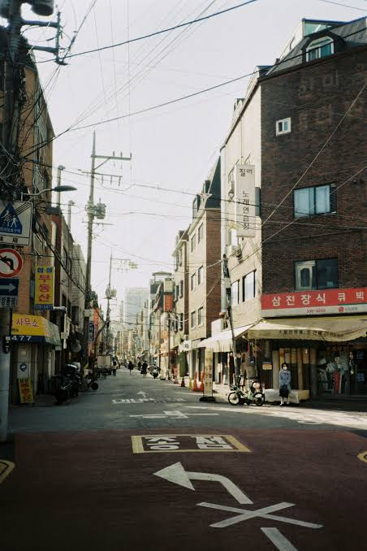

Words That Carry Culture

Surprise, the line got extended! Part 2 of my journal picks up where Entry 4 left off, and the first new stop is the one I've secretly been doing homework for since 2016: the Korean language. I learned my first Korean words from BTS lyrics and K-drama subtitles, and the more I picked up, the more I noticed that Korean doesn't just describe Korean culture. The culture is built right into the grammar. This entry is about that, plus one of my favorite Korean movies.
One Sentence, Three Ways
In English, "I love you" is just "I love you." In Korean, you have to pick a speech level first, and that depends on who you're talking to. Press 🔊 to hear the difference.
Sometimes it's not just the ending that changes, but the whole word. Here's "Have you eaten?" going from your grandma to your best friend:
If I'm emailing a professor, I'm a little more formal, but I use the same words I'd use with my friends. "You" is always just "you."
A Korean student would use a completely different speech level with a professor, and probably avoid saying "you" at all, using a title like 교수님 (gyosunim, "respected professor") instead.
Why?
This goes back to the Confucian hierarchy I wrote about in Entry 3. When age and status shape every relationship, the language grows tools to show it. That's also why Koreans used to care so much about age. Until June 2023, Korea officially used "Korean age," where everyone gets a year older on New Year's Day. Now the law uses international age, but people still figure out who's older early on so they know how to talk to each other. One of my favorite K-drama moments is always when two characters finally agree to drop the polite -yo and switch to banmal. It's basically a relationship milestone.
Words English Doesn't Have
Some Korean words don't have a one-word English translation, and that usually means they point to something really important in the culture. Tap each card to flip it.
Konglish
Konglish is English that Korea borrowed and then made its own. I can recognize the words, but they don't always mean what I'd expect.
핸드폰 haendeupon
"Hand phone" = cell phone.
화이팅 hwaiting
"Fighting!" = "You got this!" Fans yell it at idols, and moms say it before exams.
서비스 seobiseu
"Service" = a free extra the restaurant gives you, like a bonus side dish.
셀카 selka
"Self camera" = selfie.
아이쇼핑 aisyoping
"Eye shopping" = window shopping. Honestly this one makes more sense than ours.
스킨십 seukinsip
"Skinship" = physical affection, like holding hands or hugging.
Konglish took off after the Korean War, when American influence flooded into Korea, and it's grown even more with the internet. It's the same remix energy I talked about in Entry 3: take something from outside and turn it into something new.
"Have You Eaten?"
One of the most common ways to say hi in Korean is 밥 먹었어? (bap meogeosseo?), "Have you eaten?" Nobody actually wants your lunch report. It's a way of saying "I care about you."
The greeting is often traced back to the hard years after the Korean War, when food was scarce and making sure someone had eaten was a real way to look out for them. Even the word 밥 (bap) means both "cooked rice" and "a meal," because for most of Korean history, rice was the meal. That's the perfect bridge to my next entry, which is all about food.
Film: Lost in Starlight (2025)
Summary: It's 2050 in Seoul. Nan-young is an astronaut chasing her dream of going to Mars, the same planet where her mother, Korea's first astronaut to Mars, died on a mission. Jay is a musician whose band fell apart and whose dream is on hold while he works as a mechanic. When they meet by chance, they fall for each other, but Nan-young's dream will literally take her to another planet. The movie is about what you hold onto and what you have to let go of when two people's dreams pull them in different directions.
Why I picked it: It's one of my favorite Korean animated films, and it was the first Korean animated feature Netflix ever released. As someone who grew up on Korean music, I love that Jay is a musician and that music is how the two of them connect.
How it connects to language & culture
A title with two meanings
The Korean title is 이 별에 필요한 ("what this star needs"). But say 이 별 (this star) out loud and it sounds exactly like 이별, the word for "goodbye" or "breakup." The English title can't carry both meanings at once, and that's kind of the whole movie.
Han, in space
Nan-young's dad has spent 20 years trying to contact his wife on Mars. That quiet, never-ending longing is han, the word from earlier in this entry, just set in 2050.
Family vs. dreams
Nan-young carries her mom's legacy and her dad's grief while chasing her own goal. Family expectations shaping your choices is something I see in so many Korean stories, and something I wrote about in Entry 3.
Lost in subtitles
Watching in Korean with English subtitles, I can hear speech levels shift as characters get closer, but the subtitles just say "you." A lot of the relationship is happening in grammar that English can't show.
Watch & Read
Next on my list: Han Kang
Han Kang won the 2024 Nobel Prize in Literature, the first Korean writer ever to win it. I want to read Human Acts, about the 1980 Gwangju Uprising.
Juror 8 (2019)
The Korean courtroom movie from Entry 4, still on my watch list.
Reflection
I used to think learning Korean was just memorizing new words for the same things. Now I get that you can't really separate the language from the culture. Respect for elders is in the verb endings. Caring about each other is in the way people say hi. Even the "we" in 우리 shows how much the group matters.
Every language has its own way of seeing people. Korean makes you think about your relationship with someone before you even open your mouth.
It also made me appreciate how much I've been missing with subtitles. Next time I watch Lost in Starlight (or rewatch Our Beloved Summer for the hundredth time), I'm listening for every switch to banmal.
Sources
- Netflix. "Trailer for 'Lost in Starlight' Offers a Vibrant and Heartfelt Glimpse into a Futuristic Love Story." https://about.netflix.com/en/news/lost-in-starlight-trailer
- The Korea Times. "Netflix's Korean animation 'Lost in Starlight' illuminates love, loss, Seoul's future." May 27, 2025. https://www.koreatimes.co.kr/entertainment/films/20250527/netflixs-korean-animation-lost-in-starlight-illuminates-love-loss-seouls-future
- "Lost in Starlight." Wikipedia. https://en.wikipedia.org/wiki/Lost_in_Starlight
- NobelPrize.org. "The Nobel Prize in Literature 2024: Han Kang." https://www.nobelprize.org/prizes/literature/2024/summary/
- Lost in Starlight (이 별에 필요한). Directed by Han Ji-won. Netflix, 2025.